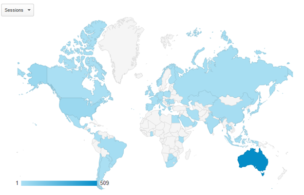
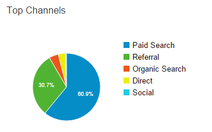
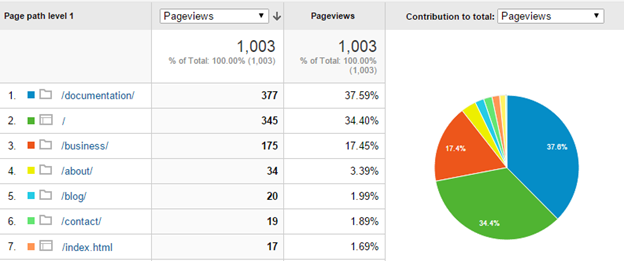

Tracking website statistics with Google Analytics18/08/15

Want to know how many people are looking at your website? Or what your most popular page is? Google Analytics is a great tool for tracking activity on your website. Google Analytics can track a lot of different statistics about visitors to your website, including where users are located, what browser they are using, how they are finding your site and how they are behaving on your site.
Google Analytics is also an excellent tool for search engine optimisation (SEO), you can track what search terms caused your page to be displayed to people and what search terms were used by people visiting your page.
Setting up Google Analytics
To track your website statistics with Google Analytics:
- Log in to your Google account or create one.
- Go to Google Analytics.
- Click Sign up.
- Fill out the New Account page with all your website information.
- Click Get Tracking ID.
- Copy the code in the This is your tracking code. Copy and paste it into the code of every page that you want to track box.
- Paste this code into all the pages you want to track. You can paste the code anywhere in the HTML document but I prefer at the end of the page just above the closing body tag so that the analytics script doesn’t slow down page loading times.
- Upload your updated web pages to the internet.
- Log in to Google Analytics whenever you want to track your website’s progress.
Make sure you include a privacy policy on your website that lets your users know that you’re tracking statistical information from their visit.
My favourite features of Google Analytics
Who’s looking at your website
The Audience area of Google Analytics tracks the number of people visiting your site and tells you information about these people, including where they’re from, whether they’re on a mobile or desktop, what browser they’re using, how many are returning visitors and how long they’re spending on pages.
Where people are coming from
The Acquisition area of Google Analytics tracks how people are reaching your website. You can see whether people are finding your site organically, through advertising or from a referral. You can even see what search terms are resulting in people seeing your site in search results and what terms lead people to visiting your site.
How people are using your website
The Behaviour area of Google Analytics tracks people’s use of your site. You can see what pages they’re visiting – either as individual pages or as areas of your website, what pages are the main landing or exit pages and the average time spent on each page.
Set goals
You can set specific events that you want to track, including a specific page being reached, a minimum duration on a page or a video being played.
Link with AdWords and other Google accounts
You can link your Analytics data with other Google products like Adwords and Webmaster Tools. Google sends data between linked products enhancing the statistics and information available for both products.
Exclude your own views from the statistics
When I first started using Analytics I found that all my views when checking the webpages were skewing the results. In Admin it is possible to filter the statistics you see by excluding all traffic from your IP address.
If you’re interested in finding out about all the features of Google Analytics, I recommend the Google Analytics Features page.